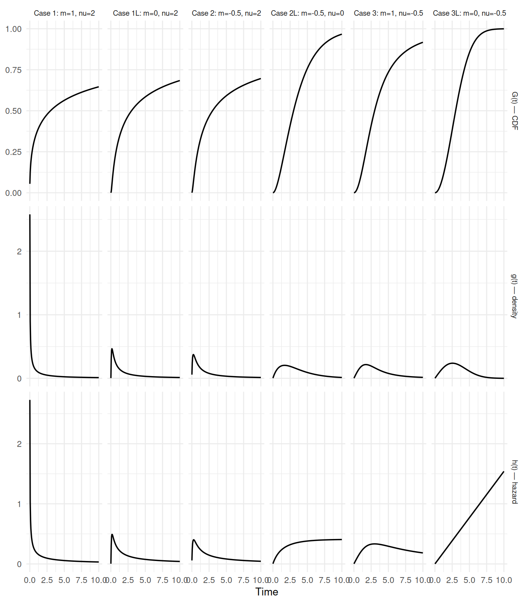
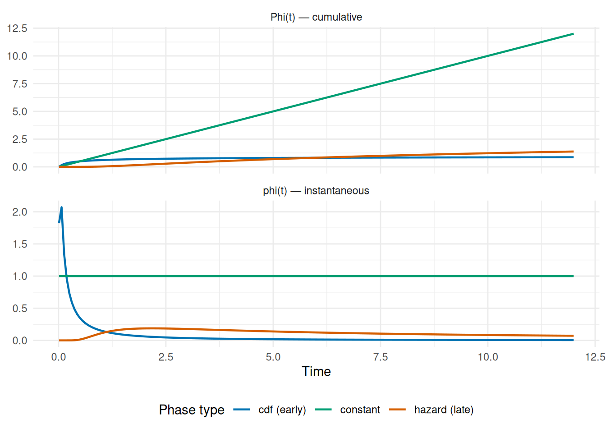
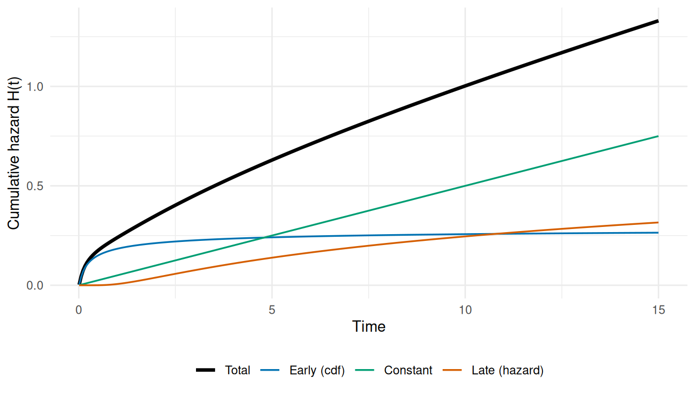

Mathematical Foundations of TemporalHazard
Generalized decomposition, multiphase additive hazard, censoring, and time-varying covariates
Source:vignettes/mf-mathematical-foundations.qmd
This vignette lays out the mathematical foundation for the models in TemporalHazard. The other vignettes treat the package as a black box you call hazard() on; this one opens the box. If you’ve used the package and want to know what it’s computing, why the parameterization is what it is, and how the multiphase decomposition relates to standard parametric survival families, this is the place.
The four pieces, in order: the generalized temporal decomposition family (Blackstone, Naftel, and Turner 1986) that every phase is built from; the additive multiphase hazard model that composes phases into a full hazard; the maximum-likelihood objective under mixed censoring (right, left, interval, counting-process), which is what the optimizer minimizes; and extensions for phase-specific and time-varying covariates. The same decomposition framework carries over to longitudinal mixed-effects settings (Rajeswaran et al. 2018), though this vignette stays in the survival regime.
For users migrating from the legacy SAS/C HAZARD program, each section notes how the R parameterization relates to the original parameter names. For the full translation table, see vignette("sas-to-r-migration") or call hzr_argument_mapping().
1 Generalized Temporal Decomposition
1.1 The parametric family
Every temporal phase in TemporalHazard is built from a single parametric family, decompos(t; t_half, nu, m), introduced by Blackstone, Naftel, and Turner (1986) that produces three linked quantities from just three parameters:
- \(G(t)\) — cumulative distribution function (CDF), bounded \([0, 1]\)
- \(g(t) = dG/dt\) — probability density function
- \(h(t) = g(t) / (1 - G(t))\) — hazard function
The three parameters control the shape of the distribution:
| Parameter | Meaning | Constraint |
|---|---|---|
t_half |
Half-life: time at which \(G(t_{1/2}) = 0.5\) | \(> 0\) |
nu |
Time exponent — controls rate dynamics | any finite value |
m |
Shape exponent — controls distributional form | any finite value |
SAS/C parameter bridge
The original C code used different parameter names per phase:
- Early phase (G1):
DELTA,RHO/THALF,NU,M\(\to\)t_half,nu,m- Late phase (G3):
TAU,GAMMA,ALPHA,ETA\(\to\)t_half,nu,mBoth collapse onto the same 3-parameter decomposition family. The C
DELTAparameter controlled a time transformation \(B(t) = (\exp(\delta t) - 1)/\delta\) that is absorbed into the shape.
In R, hzr_decompos() computes all three quantities:
t_grid <- seq(0.01, 10, length.out = 200)
# Standard sigmoidal (Case 1: m > 0, nu > 0)
d <- hzr_decompos(t_grid, t_half = 3, nu = 2, m = 1)
# Verify the half-life property: G(t_half) = 0.5
d_half <- hzr_decompos(3, t_half = 3, nu = 2, m = 1)
cat("G(t_half) =", round(d_half$G, 6), "\n")
#> G(t_half) = 0.5
# Verify the identity: h(t) = g(t) / (1 - G(t))
h_check <- d$g / (1 - d$G)
cat("Max |h - g/(1-G)| =", max(abs(d$h - h_check)), "\n")
#> Max |h - g/(1-G)| = 01.2 The six valid cases
Different sign combinations of \(\nu\) and \(m\) pick out different asymptotic behaviors of decompos(), and the package treats each as a separate case for numerical stability. The combination \(m < 0\) and \(\nu < 0\) produces an integrand with no finite normalization and is rejected at the input-validation step. The remaining six are the catalog every phase in the package selects from:
| Case | m | nu | Behavior |
|---|---|---|---|
| 1 | > 0 | > 0 | Standard sigmoidal |
| 1L | = 0 | > 0 | Weibull-like (exponential limit as m -> 0) |
| 2 | < 0 | > 0 | Heavy-tailed |
| 2L | < 0 | = 0 | Exponential decay |
| 3 | > 0 | < 0 | Bounded cumulative |
| 3L | = 0 | < 0 | Bounded exponential |
The following plot shows the CDF \(G(t)\), density \(g(t)\), and hazard \(h(t)\) for each case, all with t_half = 3:
if (has_ggplot) {
library(ggplot2)
params <- list(
"Case 1: m=1, nu=2" = list(nu = 2, m = 1),
"Case 1L: m=0, nu=2" = list(nu = 2, m = 0),
"Case 2: m=-0.5, nu=2" = list(nu = 2, m = -0.5),
"Case 2L: m=-0.5, nu=0" = list(nu = 0, m = -0.5),
"Case 3: m=1, nu=-0.5" = list(nu = -0.5, m = 1),
"Case 3L: m=0, nu=-0.5" = list(nu = -0.5, m = 0)
)
t_grid <- seq(0.01, 10, length.out = 200)
rows <- list()
for (nm in names(params)) {
p <- params[[nm]]
d <- hzr_decompos(t_grid, t_half = 3, nu = p$nu, m = p$m)
rows <- c(rows, list(data.frame(
time = rep(t_grid, 3),
value = c(d$G, d$g, d$h),
quantity = rep(c("G(t) — CDF", "g(t) — density", "h(t) — hazard"),
each = length(t_grid)),
case = nm
)))
}
df <- do.call(rbind, rows)
# Cap hazard display at reasonable values for readability
df$value[df$quantity == "h(t) — hazard" & df$value > 5] <- NA
ggplot(df, aes(x = time, y = value)) +
geom_line(linewidth = 0.6) +
facet_grid(quantity ~ case, scales = "free_y") +
labs(x = "Time", y = NULL) +
theme_minimal(base_size = 10) +
theme(strip.text = element_text(size = 7))
}
1.3 Derivation sketch
The construction begins with a rate function \(\rho\) chosen so that \(G(t_{1/2}) = 0.5\) exactly. For Case 1 (\(m > 0, \nu > 0\)):
\[ \rho = \nu \, t_{1/2} \left(\frac{2^m - 1}{m}\right)^{\!\nu} \]
Then, with the dimensionless time \(b(t) = \nu t / \rho\):
\[ G(t) = \left(1 + m \, b(t)^{-1/\nu}\right)^{-1/m} \]
\[ g(t) = \left(1 + m \, b(t)^{-1/\nu}\right)^{-1/m - 1} \cdot b(t)^{-1/\nu - 1} / \rho \]
The other five cases arise as limits (\(m \to 0\), \(\nu \to 0\)) or sign reflections of this base form. The implementation in hzr_decompos() dispatches to the appropriate branch after checking the signs of nu and m.
2 Additive Multiphase Hazard Model
2.1 Model specification
The total cumulative hazard decomposes additively across \(J\) phases:
\[ H(t \mid \mathbf{x}) = \sum_{j=1}^{J} \mu_j(\mathbf{x}) \cdot \Phi_j(t;\, t_{1/2,j},\, \nu_j,\, m_j) \]
where:
- \(\mu_j(\mathbf{x}) = \exp(\alpha_j + \mathbf{x}_j \boldsymbol{\beta}_j)\) is the phase-specific log-linear scale with covariates
- \(\Phi_j(t)\) is the temporal shape, determined by the phase type
The three phase types correspond to different uses of the decomposition output:
| Phase type | \(\Phi_j(t)\) | Domain | Interpretation |
|---|---|---|---|
"cdf" |
\(G(t)\) | \([0, 1]\) | Early risk that resolves over time |
"hazard" |
\(-\log(1 - G(t))\) | \([0, \infty)\) | Late or aging risk that accumulates |
"constant" |
\(t\) | \([0, \infty)\) | Flat background rate (no shape parameters) |
SAS/C bridge
The classic three-phase HAZARD model used:
- G1 (early) \(\to\)
hzr_phase("cdf", ...)- G2 (constant) \(\to\)
hzr_phase("constant")- G3 (late) \(\to\)
hzr_phase("hazard", ...)TemporalHazard generalizes this to \(N\) phases of any type.
2.2 Derived quantities
From the cumulative hazard, the instantaneous hazard and survival are:
\[ h(t \mid \mathbf{x}) = \sum_{j=1}^{J} \mu_j(\mathbf{x}) \cdot \varphi_j(t) \qquad\text{where } \varphi_j = d\Phi_j/dt \]
\[ S(t \mid \mathbf{x}) = \exp\!\bigl(-H(t \mid \mathbf{x})\bigr) \]
The derivative \(\varphi_j(t)\) depends on phase type:
-
"cdf": \(\varphi(t) = g(t)\) (the density) -
"hazard": \(\varphi(t) = h(t) = g(t)/(1 - G(t))\) -
"constant": \(\varphi(t) = 1\)
2.3 Constructing phases in R
The math above is exposed in R through hzr_phase(), which builds one phase at a time, and hazard(), which composes phases into a full model. The same (t_half, nu, m) triple from decompos() parameterizes the "cdf" and "hazard" shapes; the "g3" shape exposes its own (tau, gamma, alpha, eta) parameters from the SAS “late” library; and "constant" has no shape parameters at all. A canonical three-phase model uses the "cdf" shape for the early phase, "constant" for the background, and either a delayed "cdf" or "g3" for the late phase.
# Classic three-phase pattern
early <- hzr_phase("cdf", t_half = 0.5, nu = 2, m = 0)
const <- hzr_phase("constant")
late <- hzr_phase("hazard", t_half = 5, nu = 1, m = 0)
print(early)
#> <hzr_phase> cdf (early risk)
#> t_half = 0.5 nu = 2 m = 0
print(const)
#> <hzr_phase> constant (flat rate)
print(late)
#> <hzr_phase> hazard (late risk)
#> t_half = 5 nu = 1 m = 0The cumulative hazard contribution \(\Phi(t)\) and instantaneous hazard \(\varphi(t)\) for each phase can be computed directly:
if (has_ggplot) {
t_grid <- seq(0.01, 12, length.out = 200)
phi_early <- hzr_phase_cumhaz(t_grid, t_half = 0.5, nu = 2, m = 0,
type = "cdf")
phi_late <- hzr_phase_cumhaz(t_grid, t_half = 5, nu = 1, m = 0,
type = "hazard")
phi_const <- hzr_phase_cumhaz(t_grid, type = "constant")
dphi_early <- hzr_phase_hazard(t_grid, t_half = 0.5, nu = 2, m = 0,
type = "cdf")
dphi_late <- hzr_phase_hazard(t_grid, t_half = 5, nu = 1, m = 0,
type = "hazard")
dphi_const <- hzr_phase_hazard(t_grid, type = "constant")
df <- data.frame(
time = rep(t_grid, 6),
value = c(phi_early, phi_late, phi_const,
dphi_early, dphi_late, dphi_const),
phase = rep(rep(c("cdf (early)", "hazard (late)", "constant"),
each = length(t_grid)), 2),
quantity = rep(c("Phi(t) — cumulative", "phi(t) — instantaneous"),
each = 3 * length(t_grid))
)
ggplot(df, aes(x = time, y = value, colour = phase)) +
geom_line(linewidth = 0.8) +
facet_wrap(~ quantity, scales = "free_y", ncol = 1) +
scale_colour_manual(values = c(
"cdf (early)" = "#0072B2",
"hazard (late)" = "#D55E00",
"constant" = "#009E73"
)) +
labs(x = "Time", y = NULL, colour = "Phase type") +
theme_minimal(base_size = 11) +
theme(legend.position = "bottom")
}
2.4 Additive composition example
To build intuition, here is how three phases combine into a total hazard. The key insight is that phases contribute additively to the cumulative hazard \(H(t)\), not to the survival directly.
if (has_ggplot) {
t_grid <- seq(0.01, 15, length.out = 300)
mu_early <- 0.3
mu_const <- 0.05
mu_late <- 0.2
H_early <- mu_early * hzr_phase_cumhaz(t_grid, t_half = 0.5, nu = 2,
m = 0, type = "cdf")
H_const <- mu_const * hzr_phase_cumhaz(t_grid, type = "constant")
H_late <- mu_late * hzr_phase_cumhaz(t_grid, t_half = 5, nu = 1,
m = 0, type = "hazard")
H_total <- H_early + H_const + H_late
df <- data.frame(
time = rep(t_grid, 4),
cumhaz = c(H_early, H_const, H_late, H_total),
component = rep(c("Early (cdf)", "Constant", "Late (hazard)", "Total"),
each = length(t_grid))
)
df$component <- factor(df$component,
levels = c("Total", "Early (cdf)", "Constant", "Late (hazard)"))
ggplot(df, aes(x = time, y = cumhaz, colour = component,
linewidth = component)) +
geom_line() +
scale_colour_manual(values = c(
"Total" = "black", "Early (cdf)" = "#0072B2",
"Constant" = "#009E73", "Late (hazard)" = "#D55E00"
)) +
scale_linewidth_manual(values = c(
"Total" = 1.2, "Early (cdf)" = 0.6,
"Constant" = 0.6, "Late (hazard)" = 0.6
)) +
labs(x = "Time", y = "Cumulative hazard H(t)",
colour = NULL, linewidth = NULL) +
theme_minimal(base_size = 11) +
theme(legend.position = "bottom")
}
3 Maximum Likelihood Estimation
3.1 Log-likelihood under mixed censoring
TemporalHazard supports four censoring types in a single dataset, coded by the status indicator:
| Code | Type | Contribution to log-likelihood |
|---|---|---|
| \(\delta_i = 1\) | Exact event | \(\log h(t_i \mid \mathbf{x}_i) - H(t_i \mid \mathbf{x}_i)\) |
| \(\delta_i = 0\) | Right-censored | \(-H(t_i \mid \mathbf{x}_i)\) |
| \(\delta_i = -1\) | Left-censored | \(\log\bigl(1 - \exp(-H(u_i \mid \mathbf{x}_i))\bigr)\) |
| \(\delta_i = 2\) | Interval-censored | \(-H(l_i \mid \mathbf{x}_i) + \log\bigl(1 - \exp(-(H(u_i) - H(l_i)))\bigr)\) |
where \(l_i\) and \(u_i\) are the lower and upper bounds of the censoring interval.
The full log-likelihood is:
\[ \ell(\boldsymbol{\theta}) = \sum_{i:\,\delta_i=1} \Bigl[\log h(t_i \mid \mathbf{x}_i) - H(t_i \mid \mathbf{x}_i)\Bigr] - \sum_{i:\,\delta_i=0} H(t_i \mid \mathbf{x}_i) \] \[ + \sum_{i:\,\delta_i=-1} \log\!\bigl(1 - e^{-H(u_i \mid \mathbf{x}_i)}\bigr) + \sum_{i:\,\delta_i=2} \Bigl[-H(l_i \mid \mathbf{x}_i) + \log\!\bigl(1 - e^{-(H(u_i) - H(l_i))}\bigr)\Bigr] \]
The \(\log(1 - e^{-x})\) terms are computed using the numerically stable primitive hzr_log1mexp(), which avoids catastrophic cancellation when \(x\) is near zero.
# Naive log(1 - exp(-x)) fails near zero
x_small <- 1e-15
cat("Naive: ", log(1 - exp(-x_small)), "\n")
#> Naive: -34.53958
cat("Stable: ", hzr_log1mexp(x_small), "\n")
#> Stable: -34.538783.2 Internal parameterization
During optimization, shape parameters are reparameterized for unconstrained search. For each phase \(j\), the internal parameter sub-vector is:
| Parameter | Internal (estimation) | User-facing (reported) |
|---|---|---|
| Scale | \(\log \mu_j\) | \(\mu_j = \exp(\log \mu_j)\) |
| Half-life | \(\log t_{1/2,j}\) | \(t_{1/2,j} = \exp(\log t_{1/2,j})\) |
| Time exponent | \(\nu_j\) (unconstrained) | \(\nu_j\) |
| Shape | \(m_j\) (unconstrained) | \(m_j\) |
| Covariates | \(\beta_{j,1}, \ldots, \beta_{j,p_j}\) | same |
Constant phases omit log_t_half, nu, and m, contributing only one shape-free parameter (log_mu). The full \(\boldsymbol{\theta}\) is the concatenation of all phase sub-vectors.
3.3 Optimization strategy
The optimizer uses stats::optim() with BFGS on the unconstrained internal scale, wrapped by .hzr_optim_generic(). Key features:
-
Multi-start: the optimizer runs from \(k\) random perturbations around the user-supplied starting values (default \(k = 5\), controlled by
control$n_starts). The run with the highest log-likelihood is kept. - Feasibility guard: any parameter vector where \(m < 0\) and \(\nu < 0\) for the same phase returns \(-\infty\) immediately.
-
Post-fit Hessian: the numerical Hessian of the negative log-likelihood at the solution is inverted to produce the variance-covariance matrix \(\hat{V}\), with standard errors \(\sqrt{\text{diag}(\hat{V})}\). The inversion is hardened against the ill-conditioning that arises at high parameter counts: the Hessian is symmetrized, its reciprocal condition number is checked, and it is inverted via a Cholesky factorization, with a general
solve()fallback when the Hessian is not positive-definite. Non-positive variance estimates are flagged rather than silently returned asNaNstandard errors. Each fit carriesrcond(reciprocal condition number) andpd(positive-definiteness) diagnostics;summary()prints a note, and a warning is raised, when a fit is ill-conditioned or not positive-definite.
4 Covariates and Phase-Specific Formulas
4.1 Global covariates
By default, every phase shares the same covariate vector from the model formula. Each phase gets its own coefficient vector \(\boldsymbol{\beta}_j\):
\[ \mu_j(\mathbf{x}) = \exp\!\bigl(\alpha_j + \mathbf{x}\,\boldsymbol{\beta}_j\bigr) \]
So the same predictors can have different effects on early vs. late risk, which is a core feature of multiphase models.
4.2 Phase-specific covariates
The global formula above lets every covariate act on every phase through a shared shift \(x^\top \beta\). That’s the right structure when a covariate plausibly affects the entire hazard trajectory. But clinical reality often pulls the other way: surgical risk factors (grade IV complications, intra-operative blood loss) belong in the early phase but say nothing about late attrition; chronic comorbidities (NYHA class progression, late-onset diabetes) belong in the late phase but were irrelevant during the operative window. Phase-specific covariates let you build that structure directly.
When a phase carries its own one-sided formula, the phase gets its own design matrix from the data, and only those covariates appear in that phase’s \(\boldsymbol{\beta}_j\). Other phases ignore them entirely.
# Early risk depends on surgical factors; late risk on chronic conditions
hazard(
survival::Surv(time, status) ~ age + nyha + shock,
data = dat,
dist = "multiphase",
phases = list(
early = hzr_phase("cdf", t_half = 0.5, nu = 2, m = 0,
formula = ~ age + shock),
late = hzr_phase("hazard", t_half = 5, nu = 1, m = 0,
formula = ~ age + nyha)
),
fit = TRUE
)When a phase has a formula, it gets its own design matrix built from the data, and only those covariates appear in its \(\boldsymbol{\beta}_j\). The parameter vector is shorter for phases with fewer covariates, which can improve identifiability and convergence.
4.3 Time-varying coefficients
For single-distribution models, TemporalHazard supports piecewise time-varying coefficients via the time_windows argument. This expands the design matrix into window-specific blocks:
\[ \eta_i = \sum_{k=1}^{K} \mathbf{x}_i \boldsymbol{\beta}_k \cdot \mathbf{1}(t_i \in W_k) \]
where \(W_1, \ldots, W_K\) are the time windows defined by the cut points. Each predictor gets a separate coefficient in each window, allowing effects to change over follow-up time.
Multiphase vs. time-varying coefficients
For multiphase models, the phase structure itself captures time-varying effects: early phases dominate at small \(t\) and late phases at large \(t\). The
time_windowsmechanism is a complementary approach for single-distribution models.
5 Identifiability and Practical Considerations
5.1 Parameter identifiability
Multiphase models with many free parameters can have flat or multi-modal likelihood surfaces. Practical guidelines:
Fix shape parameters when possible. If clinical knowledge suggests a specific temporal pattern (e.g. early mortality follows a Weibull shape with \(m = 0\)), fix
min thehzr_phase()starting values and inspect whether the optimizer moves it.Start from the SAS/C estimates. If legacy results are available, translate them using
hzr_argument_mapping()and supply as starting values.Use multi-start optimization. The default
control$n_starts = 5helps escape local optima, but complex models may benefit from more starts.Phase-specific covariates improve identifiability. Restricting each phase to clinically relevant predictors reduces the parameter count and sharpens the likelihood surface.
5.2 Numerical stability
The decomposition engine applies several guards:
- Time is clamped above
.Machine$double.xminto avoid \(0^{\text{negative}}\) -
\(1 - G(t)\) is clamped above
.Machine$double.xminbefore computing the hazard \(h(t) = g(t)/(1 - G(t))\) - Left- and interval-censored contributions use
hzr_log1mexp()to avoid \(\log(0)\) when \(H(t)\) is very small
Together these keep the gradients finite throughout the optimization, even in regions of parameter space far from the optimum.
6 Summary of Key Functions
| Function | Purpose |
|---|---|
hzr_decompos(t, t_half, nu, m) |
Core decomposition: returns \(G\), \(g\), \(h\) |
hzr_phase_cumhaz(t, ..., type) |
Phase cumulative hazard \(\Phi(t)\) |
hzr_phase_hazard(t, ..., type) |
Phase instantaneous hazard \(\varphi(t)\) |
hzr_phase(type, t_half, nu, m, formula) |
Construct a phase specification |
hazard(..., dist = "multiphase", phases = ...) |
Fit a multiphase model |
predict(fit, type, decompose = TRUE) |
Per-phase decomposed predictions |
hzr_argument_mapping() |
SAS/C \(\to\) R parameter translation table |
hzr_log1mexp(x) |
Stable \(\log(1 - e^{-x})\) |
For a worked clinical example, see vignette("getting-started"). For migration from SAS HAZARD, see vignette("sas-to-r-migration").
References
Blackstone EH, Naftel DC, Turner ME Jr. The decomposition of time-varying hazard into phases, each incorporating a separate stream of concomitant information. J Am Stat Assoc. 1986;81(395):615–624. doi: 10.1080/01621459.1986.10478314
Rajeswaran J, Blackstone EH, Ehrlinger J, Li L, Ishwaran H, Parides MK. Probability of atrial fibrillation after ablation: Using a parametric nonlinear temporal decomposition mixed effects model. Stat Methods Med Res. 2018;27(1):126–141. doi: 10.1177/0962280215623583